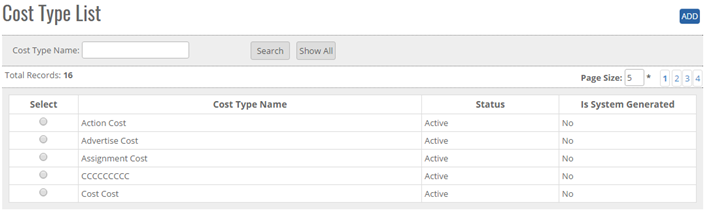
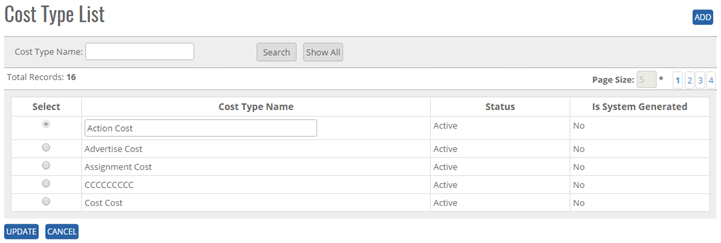


	<section>
		<article>
			<h2>Cost Type<span></span></h2>
			<div>
				<p></p>
				

				<p>Cost Type Comes under <b>Master</b> Module. It can be accessed by user who has rights for this module. </p>

				<p>Go To >> Master >> Cost Type >><b>ADD</b></p>

				<p>Click on add button at top right corner of the page.</p>
				 
				<div class="triangle-border top">
					
				</div>

				<p>To Add a <b>Cost Type</b> in the system, system will have following page:</p>

				<p>-Enter Cost type Name In <b>TEXT BOX</b></p>

				<p><b>-Status</b> by default will be <b>Active</b> </p>

				<p>-Is system Generated will be <b>NO</b> By default </p>

				<p>Click on <b>ADD</b> Button, Enter a cost Type Name </p>

				<p>Click on <b>Save</b> Button, user will get alert message <b>"Cost Type Record Added Successfully"</b></p>

				<p><b>Note:</b> Cost Type Name will be Unique.</p>

				<p><b>Modifying an Existing Cost Type</b></p>

				<p>The user who has a right to edit can edit the existing <b>"COST TYPE LIST"</b> in the system. All the fields can be edited by user, which impacts all its references in the system. </p>

				<p>Click <b>Edit</b>, Edit Cost Type . It will show Cost Type Name as per added previously.</p>

				<p>Go To >> Master>>Cost Type>>Search Cost Type>Click Radio Button (Cost Type Name) >> <b>EDIT</b></p>

				<div class="triangle-border top">
					
				</div>

				<p>System will allow editing all the Cost Type details. </p>

				<p>Click <b>Update</b> to save the currently added operation and Click <b>Cancel</b> to cancel the add operations and previous window will appears and data should not save.</p>

				<p><b>De-Activate / activating existing Cost Type</b></p>

				<p><b>DeActive</b> - Click on Deactivate Button, once the button is clicked it will ask confirmation message "Are you sure you want to Deactivate this record" with "OK and cancel" button.</p>

				<p>If user clicks on OK Button, record will get deactivated and if clicked on Cancel, record will not get deactivated.</p>

				<p><b>Active</b> - Same way once a record is deactivated, system will show Active button. If user clicks on Active button, record will get activated.</p>

				<p><b>Search /Show All Criteria</b></p>

				<p>- User can search the Cost Type name and then click on <b>Search</b>, it will show the result as per the search criteria. User can search name by single alphabet.</p>

				<p>- If user want to check all Cost Type then click on <b>Show All</b> Button. It will show the list </p>
			</div>
		</article>
	</section>